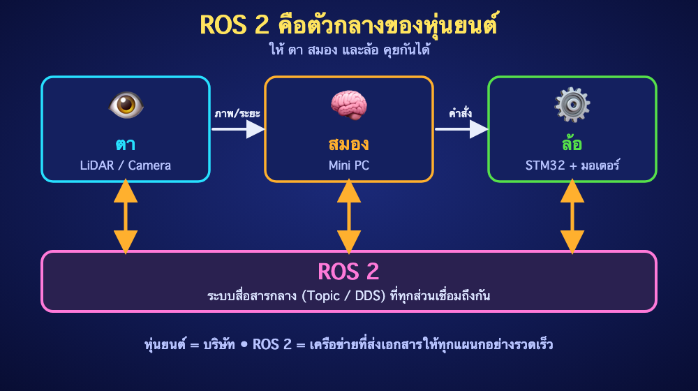
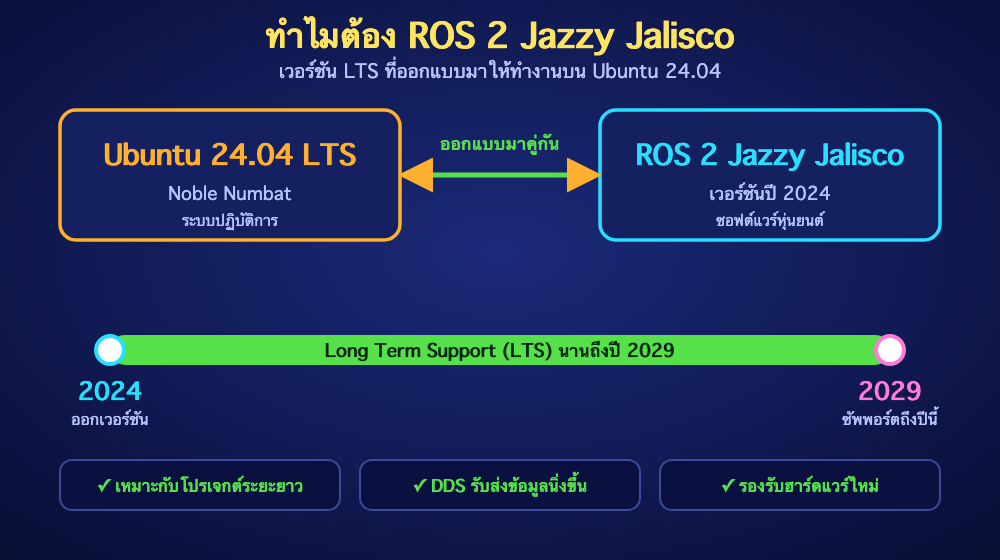
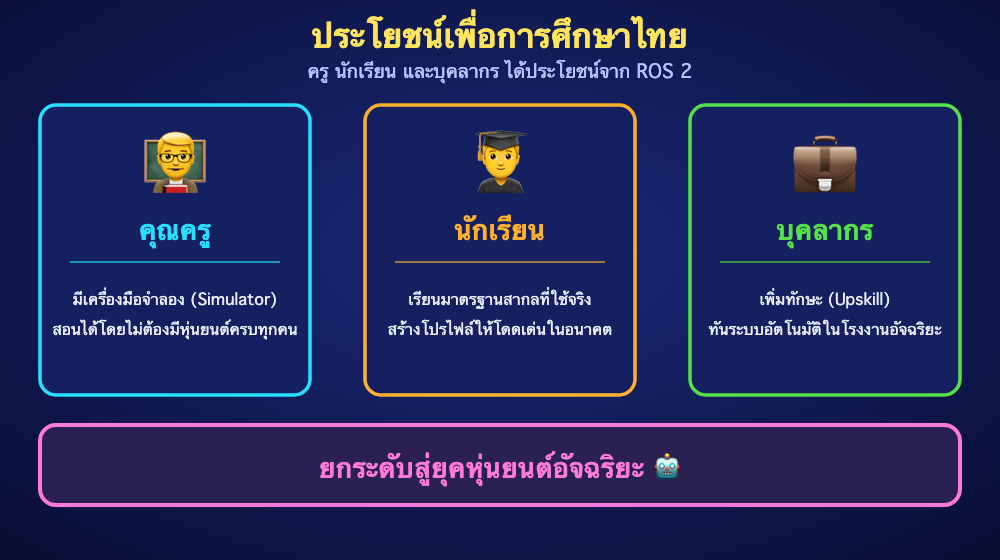

ย้อนกลับ
EP1
ทำความรู้จัก ROS 2 Jazzy
"จาก Humble สู่ Jazzy — ก้าวสำคัญของหุ่นยนต์อัจฉริยะบน Ubuntu 24.04"
🌟 ROS 2 คืออะไร? (ฉบับเข้าใจง่าย)
ROS (Robot Operating System) ไม่ใช่ระบบปฏิบัติการเหมือน Windows หรือ macOS แต่มันคือ "Middleware" หรือซอฟต์แวร์ตัวกลางที่ช่วยให้ส่วนประกอบต่างๆ ของหุ่นยนต์คุยกันได้ เช่น:
- ตา (LiDAR/Camera): ส่งข้อมูลภาพหรือระยะทางไปหา สมอง (Mini PC)
- สมอง (Mini PC): ประมวลผลและส่งคำสั่งงานไปที่ ล้อ (STM32)
"หากหุ่นยนต์คือบริษัท ROS 2 ก็คือ ระบบเครือข่ายภายใน ที่ทำให้แผนกต่างๆ ส่งเอกสารหากันได้อย่างรวดเร็วและไม่ตกหล่น"

🎷 ทำไมต้อง ROS 2 "Jazzy Jalisco"?
Jazzy Jalisco คือเวอร์ชันล่าสุด (Release ปี 2024) ที่ถูกออกแบบมาให้ทำงานบน Ubuntu 24.04 LTS โดยเฉพาะ มีความสำคัญดังนี้:
- Long Term Support: ซัพพอร์ตยาวนานถึงปี 2029 เหมาะกับโปรเจกต์ระยะยาวและภาคอุตสาหกรรม
- ประสิทธิภาพสูงขึ้น: ปรับปรุงระบบ DDS (Middleware) ให้รับส่งข้อมูลได้นิ่งและเสถียรกว่าเดิม
- Hardware ใหม่ๆ: รองรับ Driver เซนเซอร์รุ่นใหม่ และบอร์ดประมวลผลแรงๆ ได้ดีขึ้น

🔄 ความต่าง: ROS 2 Jazzy vs รุ่นก่อนหน้า
| คุณสมบัติ |
ROS 1 (Noetic) |
ROS 2 Humble |
ROS 2 Jazzy |
| OS |
Ubuntu 20.04 |
Ubuntu 22.04 |
Ubuntu 24.04 |
| การสื่อสาร |
Centralized |
Decentralized (DDS) |
DDS (Optimized) |
| ความปลอดภัย |
น้อย |
สูง |
สูงสุด (SROS2) |
| การใช้งาน |
เน้นงานวิจัย |
เริ่มเข้าสู่อุตสาหกรรม |
มาตรฐานใหม่ AMR |
🎓 ประโยชน์เพื่อการศึกษาไทย
"ยกระดับ ครู นักเรียน และบุคลากร สู่ยุคหุ่นยนต์อัจฉริยะ"
- 👨🏫 สำหรับคุณครู: มีเครื่องมือจำลอง (Simulator) ที่สมจริง ช่วยให้สอนได้โดยไม่ต้องมีหุ่นยนต์จริงครบทุกคน
- 👨🎓 สำหรับนักเรียน: ได้เรียนรู้มาตรฐานสากลที่บริษัทระดับโลกใช้งาน สร้างโปรไฟล์ให้โดดเด่นในอนาคต
- 💼 สำหรับบุคลากร: เพิ่มมูลค่าทักษะ (Upskill) ให้ทันการเปลี่ยนผ่านสู่ระบบอัตโนมัติในโรงงานอัจฉริยะ

🏁 สรุปท้ายบท
ROS 2 Jazzy คือเครื่องมือที่จะเปลี่ยนหุ่นยนต์ธรรมดาให้กลายเป็นหุ่นยนต์อัจฉริยะ และการทำงานบน Ubuntu 24.04 คือจุดเริ่มต้นที่มั่นคงที่สุดในปัจจุบัน
💡 Challenge ประจำบท:
"ลองสืบค้นดูว่า นอกจากหุ่นยนต์ดูดฝุ่นแล้ว มีอุปกรณ์ชนิดไหนรอบตัวเราอีกบ้างที่อาจใช้ระบบ ROS ในการควบคุม?"